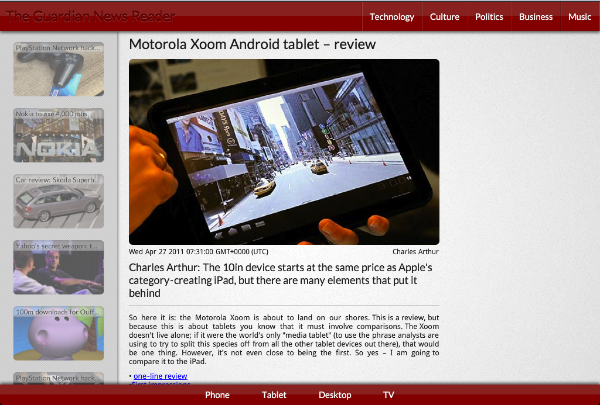
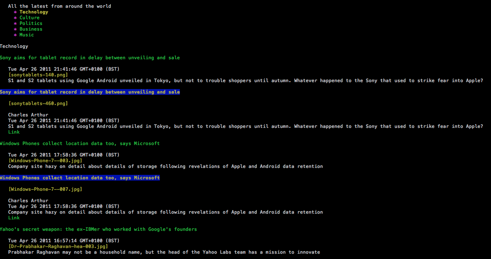
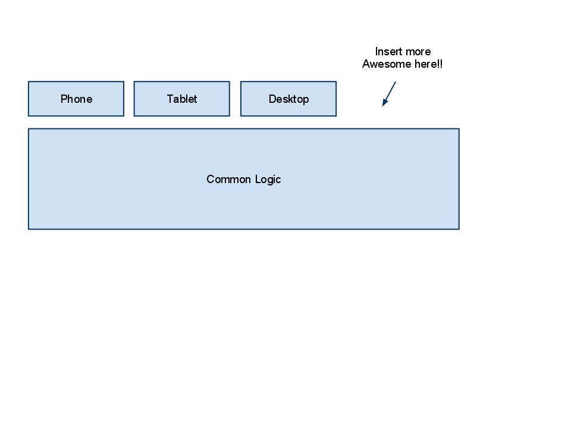
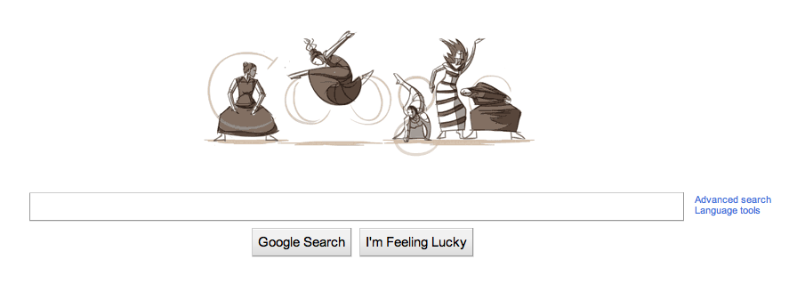
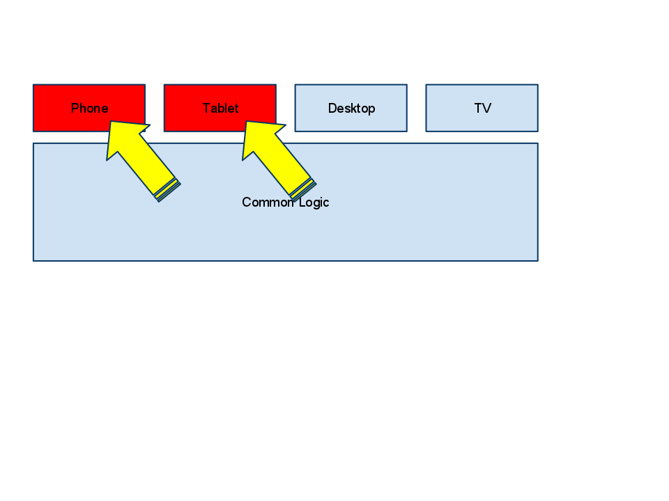
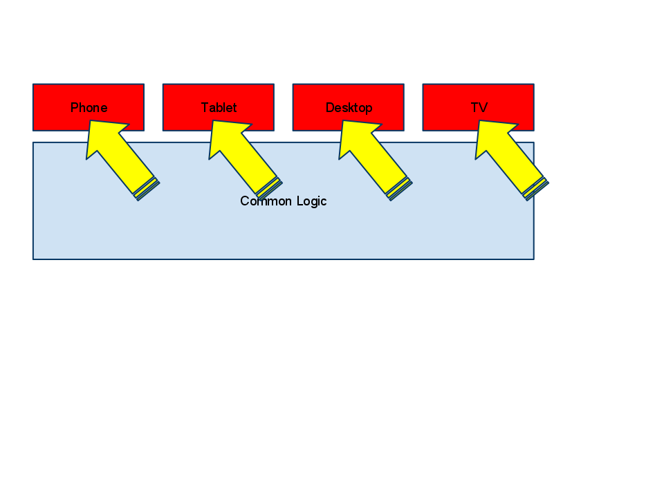
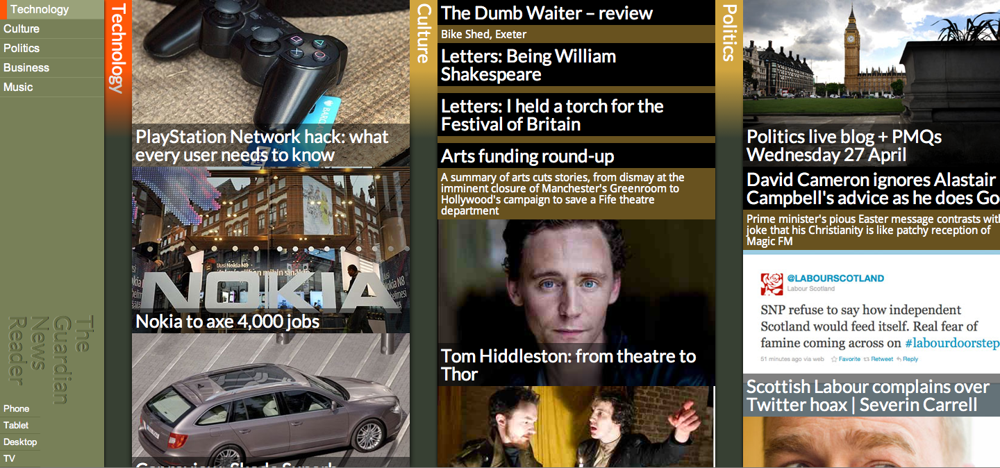
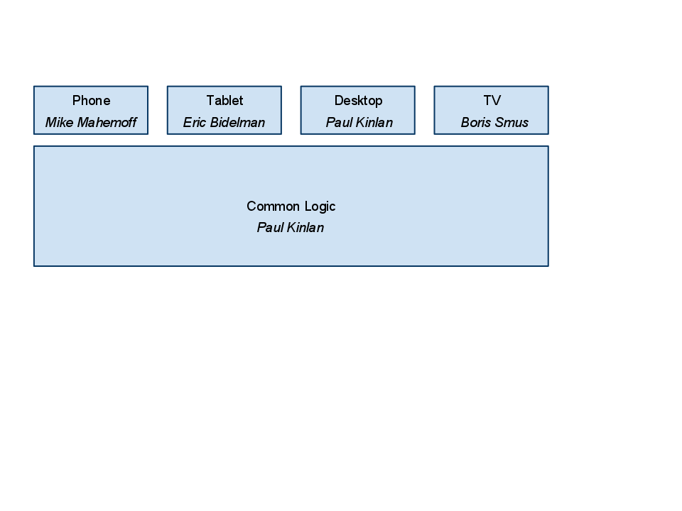

Watch this presentation
Mobile Web Development:
Zero to Hero
Mike Mahemoff (@mahemoff)
Paul Kinlan (@paul_kinlan)
May 11, 2011
Twitter: #chrome
Feedback: goo.gl/VRi5f
HTML5 is here. And it's mobile.

Mobile is awesome, right?
Convenient
Mobile is awesome, right?
Personal
Mobile is awesome, right?
Natural
Mobile is awesome, right?
Popular
But what about you, dear developer?
- Android
- iOS
- BlackBerry
- Windows Mobile
- WebOS
Not to mention form factors
- Not-so-smart-phones
- Smartphones
- Mini-tablets
- Tablets
The HTML5 platform runs everywhere (well, most places)
Traditional form factors
- Desktop
- Netbook
- Laptop
Mobile form factors
- Phones
- Smartphones
- Tablets
- Portable Consoles
- Personal Music Players
- eBook Readers
The HTML5 platform does it all (well, a lot of it anyway)
- Display
- Input
- Networking
- Offline
- And more ...
So it's awesome, but mobile presents challenges too ...
- User Experience
- Developer Experience - #devexp
Challenges of mobile web
Different Interaction Styles

Challenges of mobile web
Speed
Challenges of mobile web
Offline and Flakey Connections

Challenges of mobile web
Discoverability
Challenges of mobile web
Touch
Challenges of mobile web
Screen Size
Can we solve all of these challenges?
Can we solve any of these challenges?
Sorry, No
End of presentation
@Mahemoff
@Paul_Kinlan
Of course we can
IO Reader
Introducing
It's all JavaScript baby

Platform Support
Smartphone
Platform Support
Tablet
Challenge-Response.
Challenge: 1 of 6
Different Interaction Styles
A common base for every form factor
<!doctype html>
<html>
<body>
<article>
<header>
</header>
<section>
</section>
</article>
<article>
</article>
</body>
</html>
Platform support
Lynx
Platform support
Traditional Mobile
Feature detection & Progressive enhancement
if (Modernizr.history) window.pushState(...)
Form factor detection
FormfactorJS
formFactor.register({
formfactor: "phone",
resources:
["/scripts/phone/jquery.touch.js",
"/scripts/phone/controller.js",
"/css/phone.css"]
},
...
});
Multiple UI's the scaleable way
Semantic events
High-level events
phone.js
window.addEventListener("articlechanged", function() {
// Do something cool with the UI to show the new article
});
window.addEventListener("categorychanged", function() {
// Do something cool with the UI to show the new category
});
Classy HTML pattern
<html class="menuState"></html> <html class="categoryState"></html> <html class="articleState"></html> <html class="articleState refreshing"></html>
Classy HTML (continued)
.articleState article.active{
overflow: visible;
}
.articleState article.active .story {
display: block;
padding: 0 1em 1em 0;
text-align: justify;
}Doing more with LESS
.articleState {
article.active {
overflow: visible;
.story {
display: block;
padding: 0 1em 1em 0;
text-align: justify;
}
}
}LESS - Color palette
@bgcolor1: #788058; @color1: white; @bgcolor2: #9E9B59; @color2: white;
article {
h2 {
background-color: @bgcolor1;
}
h2:hover {
background-color: saturate(@bgcolor1, 10%);
}
}Challenge: 2 of 6
Speed
Single Page App
Fast Switching between UI States
Mobile === High latency...
- Incrementally load data
- Switch state via JavaScript
HIJAX
Supporting old browsers and feature phones
$("a").click(function(e) {
fetchArticle(this.id);
e.preventDefault();
});But....
Don't single page apps break the web?
History of History
2000: example.com/category/technology
2006: example.com/#category_technology
2009: example.com/#!category_technology
11 years of progress
2000 === 2011
example.com/category/technology
The difference is History
HTML5 History
window.pushState(
{}, "Business News", "/business"
);
Change UI when URL changes
window.onpopstate = function(e) {
var url = document.location;
if(url.indexOf("/business") > 0)
fetchCategory("business");
};
But that code is a pain, so we made a framework
LeviRoutes
var app = new routes();
app.get("/:category", function(req) {
fetchCategory(req.params.category, "json");
});
app.get("/:category/:article", function(req) {
fetchArticle(req.params.category, req.params.article);
});
Server + Client = Dual side templating
Mustache
{{#articles}}
<article id="{{id}}" name="{{categoryId}}">
<header>
<h1>{{title}}</h1>
<img class="thumbnail" src="{{thumbnail}}" />
<div class="summary">{{{shortDescription}}}</div>
</header>
</article>
{{/articles}}Challenge: 3 of 6
Offline and Flakey Connections
AppCache
<html manifest="cache.manifest">
CACHE MANIFEST
# Timestamp {{now}}
# CSS
/css/base.css
/css/tablet.css
# SCRIPTS
/scripts/controller.js
/scripts/tablet/controller.js
NETWORK:
*
Client Storage
- LocalStorage
- WebSQL Database
- IndexedDB (Future)
if(xhr.status == 200) {
window.localStorage[url] = xhr.responseText; // <- Save the data
callback(xhr.responseText);
}
else {
// There has been an error, use the saved data.
callback(window.localStorage[url]);
}Challenge: 4 of 6
Discoverability
Common URL structure
example.com/#category_technology
example.com/category/technology
Search engines
Native marketplaces
Web stores
Challenge: 5 of 6
Touch
The Awesome Layer: Enabling touch
Touch
el.ontouchstart = function(ev) {
x = ev.clientX;
y = ev.clientY;
};el.ontouchend = function(ev) {
...
};But gestures are hard
jQuery.touch.js
$(".categories").touch({
swipeX: function() { ... }
swipeY: function() { ... }
moveX: function() { ... }
moveY: function() { ... }
click: function() { ... }
longHold: function() { ... }
});Debugging
On desktop
var startEvent = Modernizr.touch ? "touchstart":"mouseEnter";
window.addEventListener(startEvent, function() { ... });
Debugging on device
Attach USB
./adb devices ./adb -s deviceid logcat| grep I/browser
Read more: goo.gl/iK0PX
Beware the Uncanny Valley
- Make it perfect
- Or make it different
Challenge: 6 of 6
Screen size
Viewport
<meta name="viewport"
content="width=device-width">Viewport
<meta name="viewport"
content="width=device-width,
minimum-scale=1.0, maximum-scale=1.0, user-scalable=no">Media Queries
@media screen and (orientation:landscape) {
article img.thumbnail {
display: block;
}
}
@media screen and (orientation:portrait) {
article img.thumbnail {
display: none;
}
}
Challenges. What challenges?
- Different Interaction Styles
- Speed
- Offline and Flakey Connections
- Discoverability
- Touch
- Screen Size
You can build apps that work everywhere
Platform support
Desktop
Platform support
TV
Distributed Development
Thank you!
Feedback: http://goo.gl/VRi5f
Code (Open Source): goo.gl/hfqEj
Libraries
jQuery: jQuery.com
LessCSS: lesscss.org
Modernizr: github.com/modernizr/modernizr
FormfactorJS: github.com/PaulKinlan/formfactor
LeviRoutes: github.com/PaulKinlan/leviroutes
TouchLib: bit.ly/c1pxKA